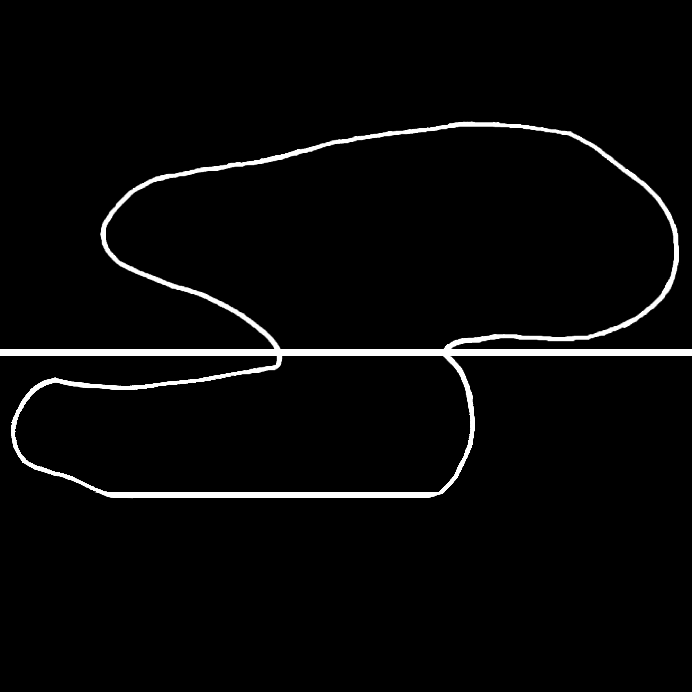
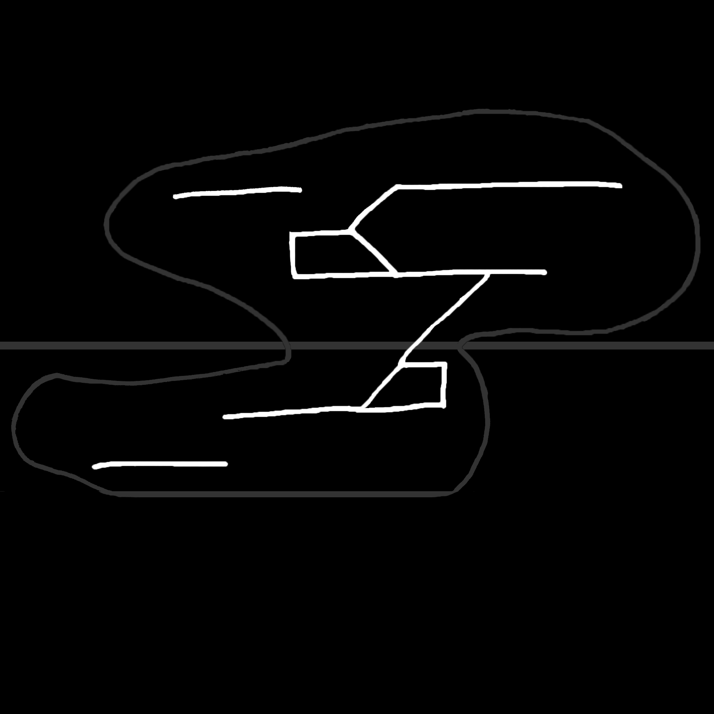

Dongdaemun Area Regeneration : Dongdaemun Design Plaza
Purpose:
The Dongdaemun Area of South Korea was a “naturally-formed centre of fashion and design” (Role of Governance in Urban Transformation of Seoul, 2017, pg. 40), the creation of the Dongdaemun Design Plaza (DDP) was provided as a core-foundation to visualise that the Dongdaemun Area was being revitalised. The DDP established a “downtown economy as the growth engine of design and creative industries in the recessed downtown, to build an international exchange network as a global source of design and creative industries, and to serve as a hub of East Asia culture and tourism” (Seoul Solution for Urban Development, 2015, pg.212). The key objectives that the Seoul Metropolitan Governement aim to achieve for this project was to;
1. Develop creative design industries
2. A base for designers and companies to strategize
3. Global Design-knowledge exchange system
4. Internation platform for designer's network
5. Hub for cultural and art activities
6. Make it a tourist site
7. having a creative atmospheric environment
The construction of the DDP was initiated through a competition, where the Seoul Metropolitan Government held the contest to promote this project on an international scale. The competition was announced in April 2007 where architect Zaha Hadid won with her design of the DDP in August 2007.


Process of how the DDP was created:
The DDP designed by Zaha Hadid, was built with 4 underground floors and 3 aboveground stories. On March 21st, 2014 the DDP was opened to the public. Through the use of 3D Building Information Modelling (BIM) Hadid was able to create a “set of inter-related spatial relationships which will define the social interactions and behavioural structure in/around the project” (Zaha Hadid DDP, Ella Thorns, 2018). This enables the interactions between both the inner fashion exhibitions and the outdoor street fashion shops. The 38,000 square metre cultural complex that Hadid completed with an aluminium façade provided a hub for design and technology, along with a park becoming a green oasis to balance the weight between Technology and Nature.

